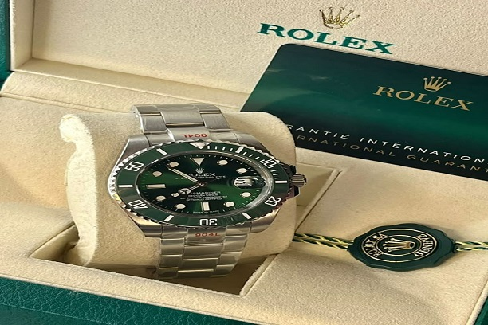

watch
In general, Rolex has three watch lines: Oyster Perpetual, Professional and Cellini (the Cellini line is Rolex's line of "dress" watches). The primary bracelets for the Oyster line are named Jubilee, Oyster, President, and Pearlmaster. The watch straps on the models are usually either stainless steel, yellow gold, white gold, rose gold, or platinum. In the United Kingdom, the retail price for the stainless steel 'Pilots' range (such as the GMT Master II) starts from £9,350. Diamond inlay watches are more expensive. The book Vintage Wristwatches by Antiques Roadshow's Reyne Haines listed a price estimate of vintage Rolex watches that ranged between US$650 and US$75,000, while listing vintage Tudors between US$250 and US$9,000.